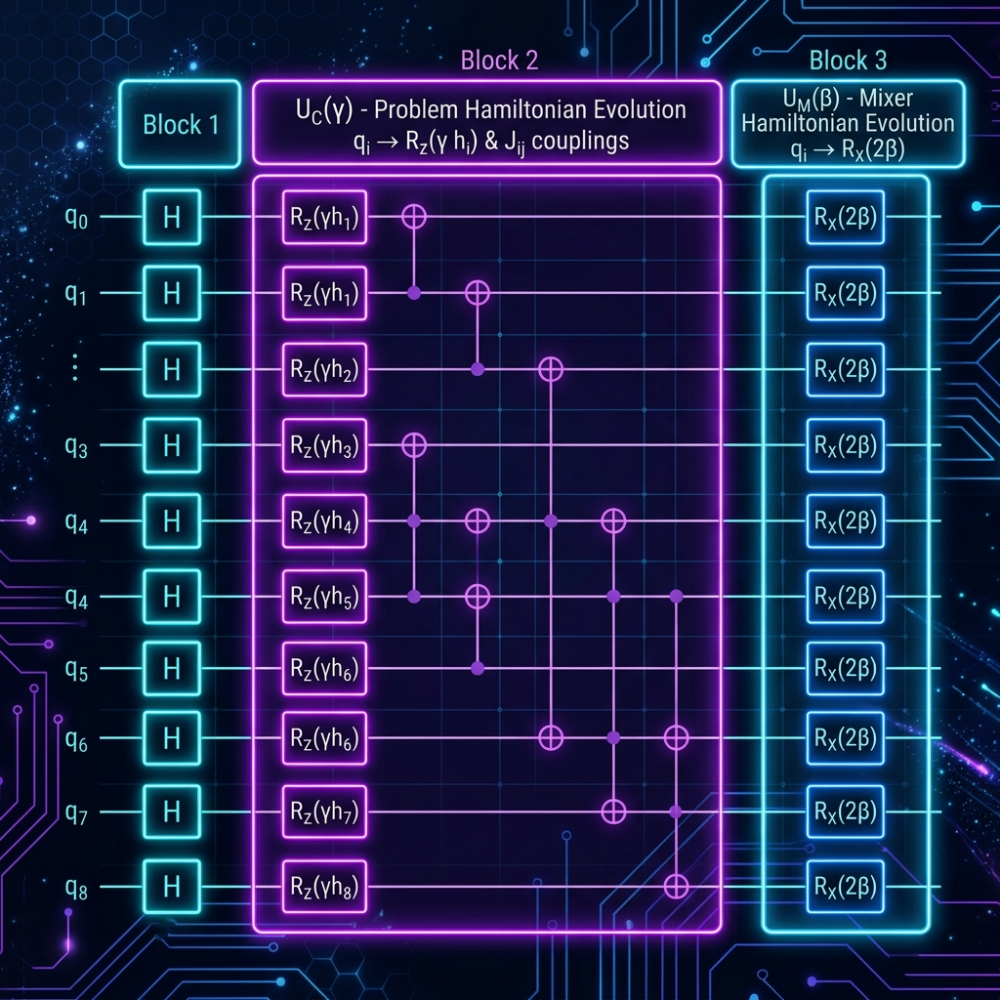
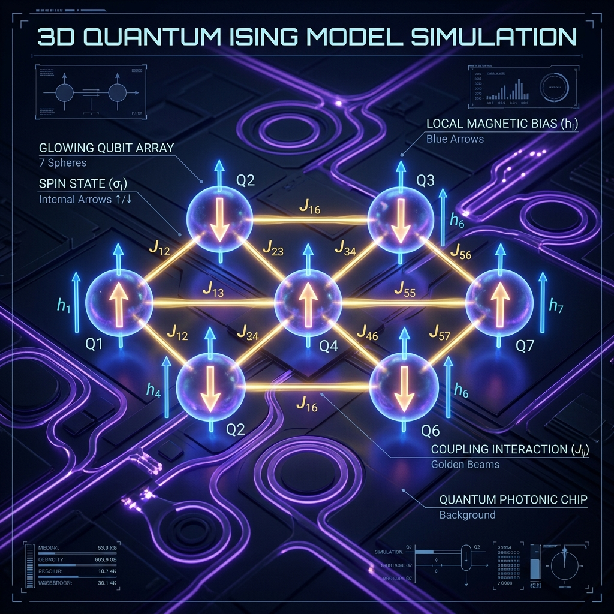

Clase de Pregrado · 90 minutos
Modelado matemático · PuLP · Qiskit 2.4 · D-Wave Ocean SDK
ILP → QUBO → Ising → QAOA → Quantum Annealing
PuLP + CBC — solución exacta
Circuito variacional — simulación local
D-Wave SimulatedAnnealingSampler — local
Comparativa y preguntas
Optimización combinatoria clásica
Buscar la mejor solución dentro de un conjunto finito pero enorme de posibilidades.
Tienes una mochila con capacidad limitada. Cada ítem tiene un valor y un peso. ¿Cuáles seleccionas para maximizar el valor sin exceder la capacidad?
Donde $x_i \in \{0, 1\}$: seleccionar (1) o no (0) el ítem $i$.
| Ítem $i$ | Nombre | Valor $v_i$ | Peso $w_i$ |
|---|---|---|---|
| 1 | Laptop | 5 | 3 |
| 2 | Cámara | 10 | 5 |
| 3 | Proyector | 15 | 7 |
| 4 | Tablet | 4 | 2 |
| 5 | Dron | 12 | 6 |
El problema matemático en formato algebraico tradicional:
Sujeto a la restricción de capacidad:
En optimización a gran escala, expresamos el modelo de forma compacta usando vectores y matrices:
Donde los parámetros de nuestra instancia se agrupan como:
Con $5$ variables binarias, existen $2^5 = 32$ combinaciones posibles. Recorramos algunas opciones:
| Opción | Vector $\mathbf{x}^T$ | Ítems Seleccionados | Peso $\mathbf{A}\mathbf{x}$ | Valor $\mathbf{c}^T\mathbf{x}$ | Estado |
|---|---|---|---|---|---|
| 1 | $[0, 0, 0, 0, 0]$ | Ninguno (Mochila Vacía) | 0 kg | 0 | Factible |
| 2 | $[1, 1, 0, 1, 0]$ | Laptop, Cámara, Tablet | $3 + 5 + 2 = 10$ kg | $5 + 10 + 4 = 19$ | Factible |
| 3 | $[0, 1, 1, 0, 1]$ | Cámara, Proyector, Dron | $5 + 7 + 6 = 18$ kg | $10 + 15 + 12 = 37$ | Excede Capacidad |
| 4 (Óptimo) | $[0, 0, 1, 1, 1]$ | Proyector, Tablet, Dron | $7 + 2 + 6 = 15$ kg | $15 + 4 + 12 = 31$ | Óptimo |
Transformación paso a paso
Los computadores cuánticos buscan el estado de mínima energía (estado base). Por ello, convertimos la maximización de la ganancia $Z$ en la minimización del costo $H_{\text{objetivo}} = -Z$:
Desarrollamos algebraicamente paso a paso para nuestra instancia:
Se distribuye el signo negativo para obtener la forma lineal sin paréntesis lista para el QUBO.
En optimización cuántica, no podemos usar multiplicadores de Lagrange lineales continuos directamente (pues requerirían optimizar la variable dual $\lambda_{\text{Lagrange}}$ de forma interactiva). Usamos el método de penalización cuadrática:
Para garantizar que el mínimo global de la función penalizada sea el óptimo real del ILP, la penalización por violar la restricción debe superar cualquier beneficio en valor:
Supongamos que violamos la restricción en el valor mínimo entero ($1$ kg): la penalización añade $\lambda \cdot 1^2 = \lambda$.
La máxima ganancia de valor que podríamos conseguir al violar la restricción metiendo un ítem extra es $\max_i v_i$.
Para que la violación nunca sea conveniente, exigimos que la penalización domine la ganancia:
En nuestra instancia: $\max(5, 10, 15, 4, 12) = 15 \implies \lambda \ge 16$.
¿Por qué no podemos penalizar una desigualdad $\sum w_i x_i \leq W$ directamente con el cuadrado?
Supongamos que una combinación válida pesa 12 kg (con capacidad $W = 15$).
La penalización sería $\lambda (12 - 15)^2 = 9\lambda > 0$.
¡El modelo estaría castigando una solución perfectamente válida por no llenar la mochila!
Para solucionar esto, introducimos una variable entera no negativa $s \geq 0$ llamada holgura (slack) que "absorbe" la capacidad no utilizada:
Ahora, si el peso de los objetos es 12 kg, $s$ puede tomar el valor 3. Así:
Las soluciones válidas no sufren penalización alguna.
La variable de holgura $s$ debe poder tomar cualquier valor entero desde vacía hasta llena:
Para representarla en QUBO, usamos su expansión binaria de $M$ bits:
Donde $M = \lceil \log_2(W+1) \rceil = \lceil \log_2(16) \rceil = \mathbf{4}$ variables binarias (qubits) adicionales.
Sustituyendo la expansión binaria:
5 ítems ($x_1 \ldots x_5$) + 4 slack ($s_0 \ldots s_3$) = 9 variables binarias = 9 qubits
Juntando todo — objetivo + penalización con slack expandido:
Expandiendo el cuadrado y usando $x_i^2 = x_i$ (propiedad binaria):
Donde $\mathbf{y} = (x_1, \ldots, x_5, s_0, \ldots, s_3)$ y $Q$ es la matriz QUBO.
Definimos $A = \sum_j c_j y_j - W$ con coeficientes:
| $y_j$ | $x_1$ | $x_2$ | $x_3$ | $x_4$ | $x_5$ | $s_0$ | $s_1$ | $s_2$ | $s_3$ |
|---|---|---|---|---|---|---|---|---|---|
| $c_j$ | 3 | 5 | 7 | 2 | 6 | 1 | 2 | 4 | 8 |
Expandimos el binomio $(X - W)^2$ donde $X = \sum_j c_j y_j$:
Por la propiedad binaria ($y_j^2 = y_j$), simplificamos $X^2$:
Sustituyendo $X^2$ en la ecuación de $A^2$ y agrupando los coeficientes de cada $y_j$:
Desarrollando algebraicamente con $W = 15 \implies c_j(c_j - 30)$ para nuestra instancia:
Para cada variable: $Q_{jj} = \underbrace{-v_j}_{\text{objetivo}} + \lambda \cdot c_j(c_j - 2W)$ (con $\lambda = 16$ según la deducción del Paso 2.1)
| Variable | $-v_j$ | $c_j$ | $c_j(c_j-30)$ | $\times\lambda=16$ | $Q_{jj}$ |
|---|---|---|---|---|---|
| $x_1$ (Laptop) | −5 | 3 | 3(−27) = −81 | −1296 | −1301 |
| $x_2$ (Cámara) | −10 | 5 | 5(−25) = −125 | −2000 | −2010 |
| $x_3$ (Proyector) | −15 | 7 | 7(−23) = −161 | −2576 | −2591 |
| $x_4$ (Tablet) | −4 | 2 | 2(−28) = −56 | −896 | −900 |
| $x_5$ (Dron) | −12 | 6 | 6(−24) = −144 | −2304 | −2316 |
| $s_0$ | 0 | 1 | 1(−29) = −29 | −464 | −464 |
| $s_1$ | 0 | 2 | 2(−28) = −56 | −896 | −896 |
| $s_2$ | 0 | 4 | 4(−26) = −104 | −1664 | −1664 |
| $s_3$ | 0 | 8 | 8(−22) = −176 | −2816 | −2816 |
Constante del QUBO: $\lambda W^2 = 16 \times 225 = \mathbf{3600}$ (con $\lambda = 16$ y $W = 15$)
Para cada par $j < k$: $\;Q_{jk}=2\lambda \cdot c_j \cdot c_k=32 \cdot c_j \cdot c_k$ (donde $2\lambda = 2 \times 16 = 32$)
| Par | $c_j \cdot c_k$ | $Q_{jk}$ |
|---|---|---|
| $x_1 x_2$ | 3·5 = 15 | 480 |
| $x_1 x_3$ | 3·7 = 21 | 672 |
| $x_1 x_4$ | 3·2 = 6 | 192 |
| $x_1 x_5$ | 3·6 = 18 | 576 |
| $x_2 x_3$ | 5·7 = 35 | 1120 |
| $x_2 x_4$ | 5·2 = 10 | 320 |
| $x_2 x_5$ | 5·6 = 30 | 960 |
| $x_3 x_4$ | 7·2 = 14 | 448 |
| $x_3 x_5$ | 7·6 = 42 | 1344 |
| $x_4 x_5$ | 2·6 = 12 | 384 |
| Par | $c_j \cdot c_k$ | $Q_{jk}$ |
|---|---|---|
| $x_1 s_0$ | 3·1 | 96 |
| $x_1 s_3$ | 3·8 | 768 |
| $x_3 s_2$ | 7·4 | 896 |
| $x_5 s_3$ | 6·8 | 1536 |
| Par | $c_j \cdot c_k$ | $Q_{jk}$ |
|---|---|---|
| $s_0 s_1$ | 1·2 | 64 |
| $s_0 s_3$ | 1·8 | 256 |
| $s_2 s_3$ | 4·8 | 1024 |
Porción $5 \times 5$ de $Q$ correspondiente a las variables de decisión:
Mapeo cuántico y algoritmo variacional
En un computador cuántico, las variables binarias se codifican con qubits usando operadores de Pauli $Z$ (actuando sobre el estado de cada qubit):
Donde $I$ es el operador Identidad. Esto nos da los eigenvalores:
| Estado cuántico | Eigenvalor de $Z_j$ | Valor de $\hat{y}_j$ (medida) | Significado físico |
|---|---|---|---|
| $|0\rangle$ | $+1$ | $\frac{1 - 1}{2} = 0$ | No seleccionado / Slack inactivo |
| $|1\rangle$ | $-1$ | $\frac{1 - (-1)}{2} = 1$ | Seleccionado / Slack activo |
Sustituimos la variable binaria por el operador de spin $\hat{y}_j = \frac{I - Z_j}{2}$ en el costo QUBO $C(\mathbf{y})$:
Distribuyendo la multiplicación término a término a mano:
Sumamos todos los términos lineales, cuadráticos y de identidad:
Reuniendo los coeficientes que acompañan a cada operador de Pauli $Z_j$, $Z_j Z_k$ e Identidad $I$:
Las relaciones de mapeo estándar entre la matriz QUBO $Q$ y los coeficientes del Hamiltoniano $H_C$ son:
* $h_j$: campos locales (qubit bias). Realizan rotaciones individuales $R_z(2\gamma h_j)$.
* $J_{jk}$: acoplamientos (qubit-qubit interaction). Implementan entrelazamiento $ZZ$.
Para entender el Hamiltoniano sin pasar por la matriz QUBO, podemos sustituir $\hat{y}_j = \frac{I - Z_j}{2}$ directamente en el costo clásico de nuestra instancia:
Agrupando y distribuyendo los términos lineales y cuadráticos a mano:
Evaluamos el binomio de restricción $\lambda(X - W)^2$ con $\lambda = 16, W = 15$ y $\sum c_j = 38$:
Multiplicamos por $\lambda = 16$ y sumamos el objetivo $H_{\text{objetivo}} = \sum \frac{v_j}{2}Z_j - 23I$:
Verifiquemos que la sustitución directa y las fórmulas de la matriz QUBO son coherentes:
Para $x_1$ ($v_1=5, c_1=3$):
$$h_1 = \frac{5}{2} - 64(3) = 2.5 - 192 = \mathbf{-189.5}$$Para $J_{12}$ ($c_1=3, c_2=5$):
$$J_{12} = 8(3)(5) = \mathbf{120}$$Con $Q_{11}=-1301$, $\sum_{k \neq 1} Q_{1k}=3360$:
$$h_1 = -\frac{-1301}{2} - \frac{3360}{4} = \mathbf{-189.5}$$Con $Q_{12}=480$:
$$J_{12} = \frac{480}{4} = \mathbf{120}$$El Hamiltoniano final $H_C$ que se programa en Qiskit o D-Wave para nuestra instancia:
| Qubit $j$ | Variable $y_j$ | Valor $v_j$ | Peso $c_j$ | Campo Local $h_j = \frac{v_j}{2} - 64c_j$ |
|---|---|---|---|---|
| 1 | Laptop ($x_1$) | 5 | 3 | $\mathbf{-189.5}$ |
| 2 | Cámara ($x_2$) | 10 | 5 | $\mathbf{-315.0}$ |
| 3 | Proyector ($x_3$) | 15 | 7 | $\mathbf{-440.5}$ |
| 4 | Tablet ($x_4$) | 4 | 2 | $\mathbf{-126.0}$ |
| 5 | Dron ($x_5$) | 12 | 6 | $\mathbf{-378.0}$ |
| 6 | Slack 0 ($s_0$) | 0 | 1 | $\mathbf{-64.0}$ |
| 7 | Slack 1 ($s_1$) | 0 | 2 | $\mathbf{-128.0}$ |
| 8 | Slack 2 ($s_2$) | 0 | 4 | $\mathbf{-256.0}$ |
| 9 | Slack 3 ($s_3$) | 0 | 8 | $\mathbf{-512.0}$ |
Acoplamientos: $J_{jk} = 8 \cdot c_j \cdot c_k$ (ej. $J_{12} = 120$, $J_{35} = 336$, $J_{89} = 256$, etc.)
El operador de evolución de costo se formula como la exponencial del Hamiltoniano:
Esto se descompone en compuertas cuánticas elementales de rotación:
Se implementa directamente con una compuerta de rotación en el eje Z:
Requiere entrelazamiento usando dos compuertas CNOT y una rotación Z:
Algoritmo variacional híbrido (cuántico-clásico) propuesto por Farhi et al. (2014)
Se aplican $p$ capas alternas de dos operadores unitarios:
Operador de costo: imprime la estructura del problema en las fases de los qubits
Operador de mezcla: $H_M = \sum_i X_i$. Explora el espacio de soluciones
Parámetros: $2p$ valores ($\gamma_1,\ldots,\gamma_p, \beta_1,\ldots,\beta_p$) optimizados clásicamente
Estructura cuántica para una capa ($p=1$) con los 9 qubits del sistema:
Se aplica una compuerta Hadamard ($H$) a cada uno de los 9 qubits, creando un estado inicial equiprobable de las $2^9 = 512$ combinaciones posibles.
Se aplica una compuerta de rotación en el eje X: $R_x(2\beta)$ a cada uno de los 9 qubits para permitir la interferencia cuántica.

Circuito QAOA completo: Preparación en paralelo, fase de costo con interacciones $J_{jk}$ y mezclador transverso.
Optimización por evolución adiabática
Paradigma de computación cuántica basado en el Teorema Adiabático: si un sistema cuántico evoluciona suficientemente lento, permanece en su estado de mínima energía.
Desglose de variables para entender el proceso físico:
Para resolver nuestra mochila con 5 ítems y 4 slack variables, programamos esta evolución de 9 qubits:
Desglose de las componentes físicas de la QPU D-Wave:
Las computadoras cuánticas y fotónicas no entienden de "mochilas" ni de "pesos". Solo entienden de física:
Campo magnético local ($h_j$): Fuerza aplicada individualmente a cada qubit.
Interacción mutua ($J_{jk}$): Tensión o fuerza de enlace que conecta al qubit $j$ con el qubit $k$.

Esquema del Hamiltoniano Ising: Sesgos locales $h_j$ (flechas individuales) e interacciones $J_{jk}$ (enlaces energéticos).
Programar la QPU consiste en sintonizar estas fuerzas físicas ($h$ y $J$). Al encender el Annealing, el procesador busca de forma natural el equilibrio de menor energía del sistema.
Los coeficientes del Hamiltoniano se construyen a partir del valor $v_j$ y peso $c_j$ de cada variable usando:
Las computadoras Ising (fotónicas y analógicas) requieren el vector de sesgos $h$ y la matriz de acoplamiento simétrica $J$ ($9\times9$):
Esta matriz $J$ y vector $h$ se envían directamente vía API (ej. en formato JSON) al procesador cuántico/fotónico.
| Aspecto | QPU Real (D-Wave) | Simulación Local |
|---|---|---|
| Sampler | DWaveSampler | SimulatedAnnealingSampler |
| Qubits | 5000+ (Advantage) | Sin límite práctico |
| Acceso | Requiere cuenta D-Wave | 100% local y gratuito |
| Velocidad | ~20μs por anneal | Depende del CPU |
SimulatedAnnealingSampler — emula el proceso de annealing clásicamente. El
código es idéntico al que usarías con una QPU real.
3 notebooks · misma instancia · 3 enfoques
import pulp
# Crear modelo de maximización
modelo = pulp.LpProblem("Mochila", pulp.LpMaximize)
# Variables binarias: x_i ∈ {0, 1}
x = [pulp.LpVariable(f"x_{i}", cat='Binary') for i in range(5)]
# Objetivo: max 8x₁ + 10x₂ + 15x₃ + 4x₄ + 12x₅
modelo += pulp.lpSum([valores[i] * x[i] for i in range(5)])
# Restricción: 3x₁ + 5x₂ + 7x₃ + 2x₄ + 6x₅ ≤ 15
modelo += pulp.lpSum([pesos[i] * x[i] for i in range(5)]) <= 15
# Resolver con CBC (gratuito, incluido)
modelo.solve(pulp.PULP_CBC_CMD(msg=0))
print(f"Valor óptimo: {pulp.value(modelo.objective)}") # → 31from qiskit_optimization.applications import Knapsack
from qiskit_optimization.algorithms import MinimumEigenOptimizer
from qiskit_algorithms import QAOA
from qiskit_algorithms.optimizers import COBYLA
from qiskit.primitives import StatevectorSampler
# Definir problema → QuadraticProgram automático
knapsack = Knapsack(values=valores, weights=pesos, max_weight=15)
qp = knapsack.to_quadratic_program()
# Configurar QAOA (p=2 capas, simulación local)
qaoa = QAOA(sampler=StatevectorSampler(),
optimizer=COBYLA(maxiter=200), reps=2)
# Resolver
result = MinimumEigenOptimizer(qaoa).solve(qp)
print(result.prettyprint())import dimod
from dwave.samplers import SimulatedAnnealingSampler
# Construir BQM manualmente (QUBO con slack)
bqm = dimod.BinaryQuadraticModel(vartype='BINARY')
for i in range(5):
bqm.add_variable(f'x_{i}', -valores[i]) # Objetivo
# Penalización cuadrática de la restricción
# (con expansión binaria del slack: s₀ + 2s₁ + 4s₂ + 8s₃)
# ... [ver notebook para expansión completa]
# Sampling (1000 lecturas)
sampler = SimulatedAnnealingSampler()
sampleset = sampler.sample(bqm, num_reads=1000)
print(sampleset.first.sample) # Mejor solución| Aspecto | Clásico (PuLP) | QAOA (Qiskit) | Annealing (D-Wave) |
|---|---|---|---|
| Tipo | Exacto (ILP) | Variacional | Metaheurístico |
| Garantía | Óptimo global | Aproximada | Aproximada |
| Formulación | ILP directo | QUBO → Ising | QUBO → BQM |
| Qubits | N/A | 9 | 9 |
| Escalabilidad | ~miles vars | ~cientos qubits | ~miles qubits |
| Hardware | CPU | QPU compuertas | QPU annealing |
📁 Repositorio: github.com/TU_USUARIO/qaoa_training
📓 Notebooks en notebooks/
🐍 conda env create -f environment.yml